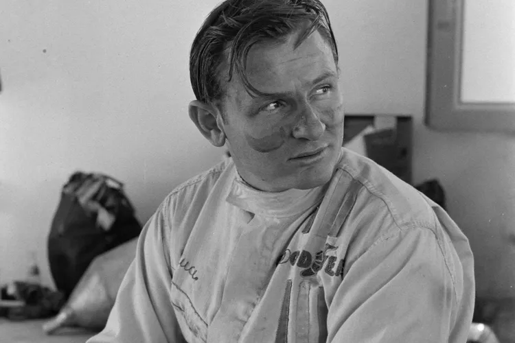

McLaren Formula 1 Team
McLaren didirikan pada tahun 1963 oleh Bruce McLaren. Tim ini debut di Formula 1 tahun 1966 dan berkembang menjadi salah satu tim paling sukses dalam sejarah F1.
Sejarah Awal & Perkembangan
- Pendirian: Didirikan Bruce McLaren (1963).
- Debut F1: GP Belgia 1966.
- Kemenangan Pertama: GP Belgia 1968.
- Era Baru: Inovasi sasis serat karbon oleh Ron Dennis.
Era Kejayaan
- Dominasi 1988: Menang 15 dari 16 balapan.
- Pembalap Legendaris: Senna, Prost, Hakkinen, Hamilton.